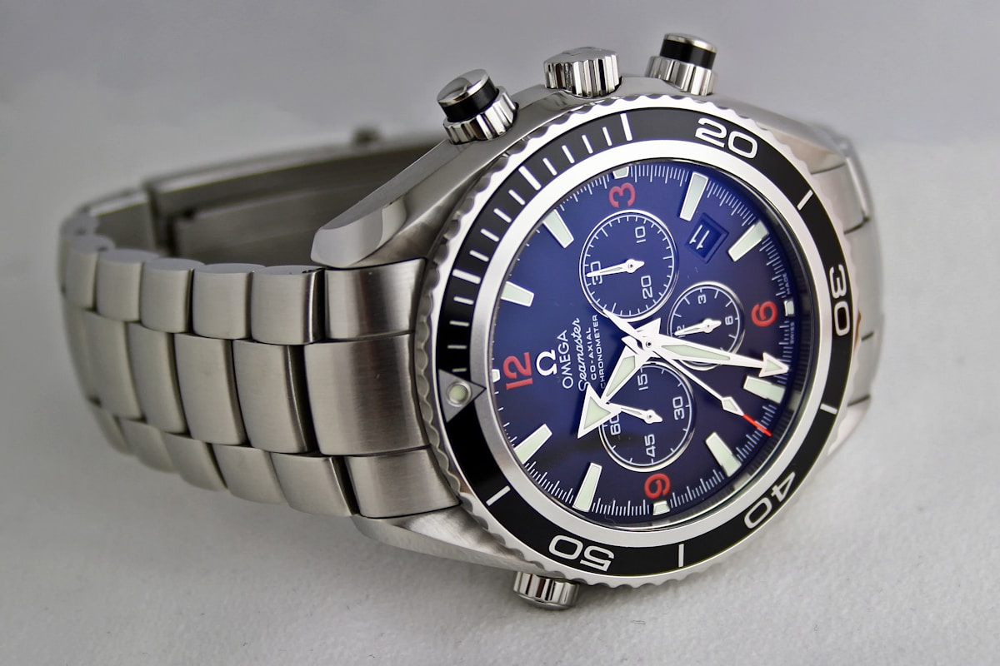

In Swiss watchmaking, the word "Chronometer" is not a decorative marketing slogan; it is a legally protected designation under Swiss federal law. Only timepieces that pass stringent laboratory timing trials conducted by independent testing institutes are permitted to bear the chronometer inscription. In this monograph, we conduct a head-to-head comparison between traditional COSC certification and the modern METAS Master Chronometer benchmark.

1. What Defines a True Chronometer in Swiss Jurisprudence?
Under international standard ISO 3159 (Timekeeping instruments — Wrist-chronometers with spring balance oscillator), a chronometer is defined as a high-precision mechanical instrument that has successfully demonstrated its ability to maintain timing consistency across multiple physical positions, varying temperatures, and across extended temporal cycles.
In Switzerland, applying the title "Chronomètre" to a watch dial without independent third-party certification constitutes a federal unfair competition offense. For decades, the benchmark of this verification has been the Contrôle Officiel Suisse des Chronomètres (COSC).
2. The COSC Protocol: 15 Days, 5 Spatial Positions & 3 Temperatures
Founded in 1973, COSC is a non-profit Swiss state-accredited independent testing observatory operating laboratories in Biel/Bienne, Saint-Imier, and Le Locle. The COSC test regimen for mechanical wristwatches spans 15 continuous days (360 hours) under relentless scrutiny:
- 5 Spatial Positions: 1) Crown Left, 2) Crown Up, 3) Crown Down, 4) Dial Down, and 5) Dial Up.
- 3 Controlled Temperatures: 8°C (cold chamber), 23°C (room temperature), and 38°C (tropical warmth chamber).
- Daily Winding & Measurement: Movements are wound daily by automated mechanical keys, and timing rates are captured via high-frequency acoustic microphones compared against atomic clocks.
To obtain certification, a movement must satisfy seven distinct criteria, chief among them maintaining an Average Daily Rate between -4.0 and +6.0 seconds per day.

3. The Inherent Limitations of Uncased Movement Testing
While COSC remains a revered benchmark, contemporary horologists have identified critical limitations in its traditional testing framework:
- Uncased Testing: COSC tests only the bare movement mounted in a temporary plastic testing cradle. When the movement is returned to the manufacture and cased into its metal housing with hands, dial, crystal, and gaskets, the mechanical clamping forces and air pressure dynamics can subtly shift the rate.
- Absence of Magnetic Testing: COSC testing does not assess the movement's resistance to modern magnetic fields.
- No Water Resistance or Power Reserve Verification: COSC evaluates only chronometric rate, leaving case water resistance and autonomy untested.
4. The METAS Revolution: Real-World Cased Watch Testing
To eliminate the shortcomings of uncased testing, the Swiss Federal Institute of Metrology (METAS—the Swiss government's national metrology institute) established the Master Chronometer Certification standard.
Unlike COSC, METAS certification mandates that the watch must first possess an existing COSC chronometer certificate for its movement, and then the completely assembled, fully cased watch must undergo eight additional rigorous laboratory trials under extreme environmental conditions.
5. 15,000 Gauss Magnetic Exposure Testing
The centerpiece of METAS Master Chronometer certification is testing under an extreme electromagnetic field of 15,000 Gauss (1.5 Tesla)—a magnetic intensity equivalent to an MRI medical scanning machine.
During the METAS protocol:
- The uncased movement is placed inside a 15,000 Gauss permanent magnetic coil while running, with audio microphones tracking oscillation stability.
- The fully cased watch is then subjected to the same 15,000 Gauss field.
- After magnetic exposure, the watch's day-to-day rate deviation is calculated to ensure zero residual magnetization.
Because traditional steel hairsprings become completely paralyzed under mere 60 Gauss fields, achieving METAS certification necessitates non-ferrous silicon (Silinvar) balance springs and non-magnetic nickel-phosphorus escapements.
6. The 8 Rigorous METAS Criteria vs COSC Matrix
| Testing Parameter | COSC Chronometer Standard | METAS Master Chronometer Standard |
|---|---|---|
| Watch Assembly State | Uncased Bare Movement Only | Fully Cased Complete Watch |
| Rate Tolerance Standard | -4.0 to +6.0 seconds / day | 0.0 to +5.0 seconds / day (No watch may run slow) |
| Magnetic Resistance | No magnetic field testing | 15,000 Gauss Magnetic Exposure |
| Water Resistance Test | Not tested | Tested to 100% rated depth in hydrostatic chambers |
| Power Reserve Validation | Not tested | Autonomy tested from 100% to 0% mainspring torque |
| Rate Deviation at 33% Autonomy | Not tested | Precision verified at low torque state (33% power) |
| Dynamic Wrist Wear Simulation | Static resting racks | 6-position robotic kinetic motion simulation |
| Patron Test Sheet Access | Printed paper upon request | Encrypted online database lookup via serial key |
7. Poinçon de Genève vs METAS Master Chronometer
Another legendary hallmark of Swiss horology is the Poinçon de Genève (Geneva Seal). Established by the Grand Council of Geneva in 1886, the Geneva Seal focuses heavily on geography (must be assembled and regulated within the Canton of Geneva) and exquisite decorative hand-finishing standards (anglage, polished screw sinks, drawn flanks).
While the Geneva Seal guarantees supreme artisanal craftsmanship and decorative purity, METAS represents the ultimate standard of functional chronometric performance, anti-magnetism, and real-world durability. ClassicCrown embraces both philosophies: our calibres meet the aesthetic hand-finishing codes of the Geneva Seal while achieving METAS Master Chronometer certification.
8. ClassicCrown Atelier Dual-Certification Commitment
Every mechanical timepiece departing the ClassicCrown manufacture undergoes dual certification. First, our calibres are tested for 15 days at COSC in Biel. Following casing and regulation in our Geneva workshop, each completed watch is subjected to our proprietary 1,000-Hour Master Chronometer validation protocol conforming to METAS standards.
Patrons receive the original chronometer timing documentation alongside a cryptographic NFC-enabled pedigree card providing instant access to their watch's complete laboratory testing history in our permanent Chronometer Registry Vault.

About the Author: Claire Vanech
Claire Vanech is the Director of Quality & Certification at ClassicCrown Manufacture S.A. With a background in precision metrology and chronometry from Neuchâtel Observatory, she oversees the testing protocols for all Master Chronometer releases.